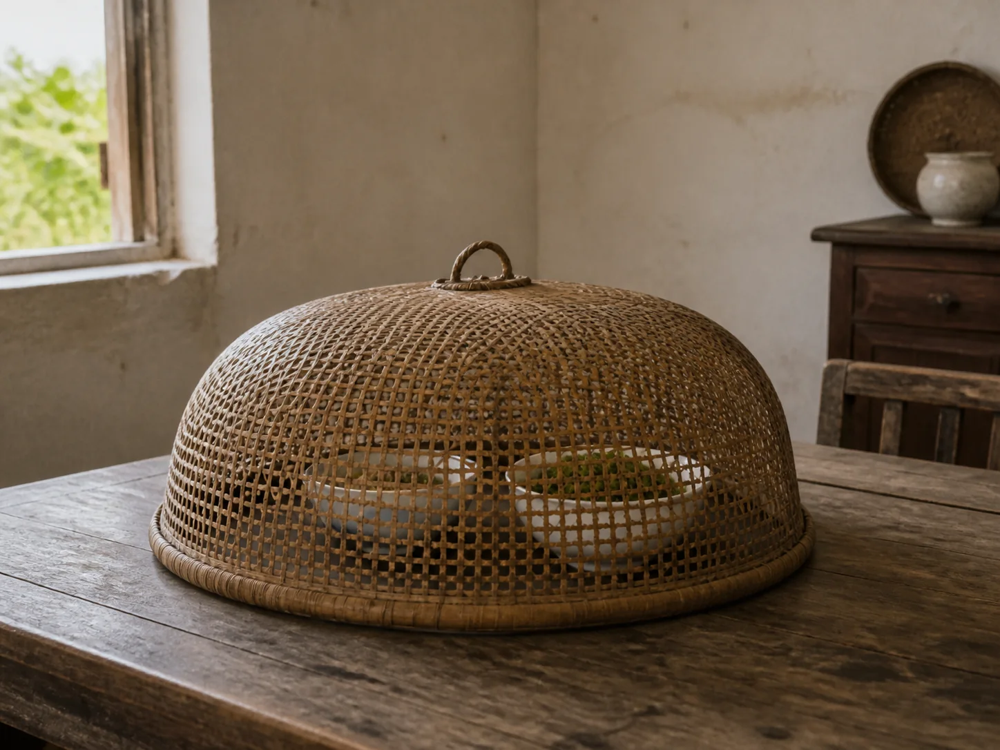

The Bamboo Food Cover Over the Lunch Bowls
A low woven bamboo cover settled over the lunch bowls, letting air cross the table while the family waited for everyone to come inside.

A dome above the dishes
The food cover came down after the bowls reached the table. Its round rim surrounded two plates without touching them, and the small loop at the top remained easy to lift with one finger. Through the open weave, the colors of greens and porcelain quietly broke into a soft grid.
In warm weather, the cover stood between the meal and the busy room around it. It discouraged flies while allowing steam to escape, and it kept a folded cloth from falling directly onto the food. Not every household owned the same shape, but the low bamboo dome was a familiar answer to a short wait.
Air moving through the weave
The object depended on spaces as much as strips. Narrow bamboo crossed and opened again, making a shell light enough to carry from a wall peg to the table. A split or loosened binding could be caught before the rim lost its circle.
The Bamboo Fan by the Evening Door moves air with a woven face, while The Dried Loofah Beside the Kitchen Sink follows another plant material into household work. The food cover does neither job, but it shares their plain construction and their need to dry fully before being put away.
Lunch waiting behind bamboo
Someone still had to come in from the courtyard, wash their hands, or finish a task at the back sink. Until then, the cover turned prepared dishes into a meal held in pause. Chopsticks could be set beside the bowls without beginning ahead of the missing person.
When the chair finally moved, the loop rose and the smell of lunch opened into the room. The cover leaned against the wall with its inside facing the air. After the bowls were cleared, crumbs were brushed from the rim, and the woven dome waited for the next table that needed a few more minutes.